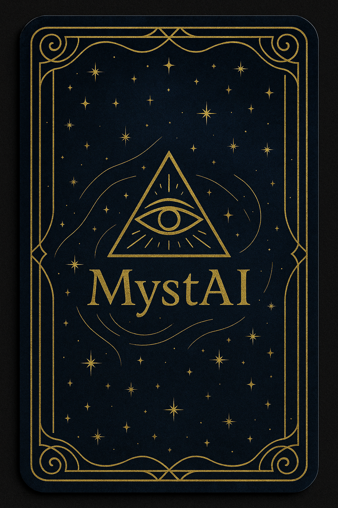

AI Tarot Reading
Select three cards for your Past – Present – Future and share your intention.
Choose 3 Cards (Past – Present – Future)

Click each card one by one. The golden MystAI backs will flip and reveal your tarot archetypes.
Your Question / Intention
Tarot Açılımım
Geçmiş
Şimdi
Gelecek
⭐ 3 kartını seçip niyetini yazdıktan sonra yapay zeka tarot yorumun burada görünecek.
MystAI eğlence amaçlı bir yapay zeka fal yorumlayıcısıdır; profesyonel veya tıbbi tavsiye yerine geçmez.